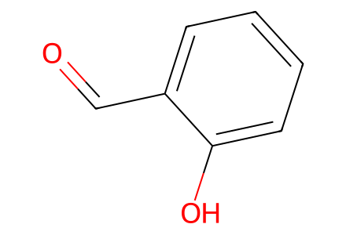
O=Cc1ccccc1OSI pp6-14 forward preparations, both convergent blocks, isolated sequential intermediates and one-pot alternatives. Commercial hydroxyproline and amino-acid partners are source-defined starts. Main article unavailable; SI-only coverage. Optimization repeats with identical endpoints are not separate route steps. Facts compiled deterministically; independent review pending.
完整 JSON · 逐步 CSV · 路线序列 · SDF · HRMS 核对
| 事件 | 分子连接 | 报告产率 | Canonical reaction SMILES |
|---|---|---|---|
| E01 | 9 → S3 | S3: 93% | O=Cc1ccccc1O>>O=Cc1cc(I)ccc1O |
| E02 | S3 → 10 | 10: 100% | O=Cc1cc(I)ccc1O>>COc1ccc(I)cc1C=O |
| E03 | 10 + Wittig-salt → 6 | 6: 76% | COc1ccc(I)cc1C=O.IC[P+](c1ccccc1)(c1ccccc1)c1ccccc1.[I-]>>COc1ccc(I)cc1/C=C\I |
| E04 | 7 + Ile-amide → 8 | 8: 97% | CC(C)(C)OC(=O)N1CC[C@H](O)[C@H]1C(=O)O.CC[C@H](C)[C@H](N)C(N)=O>>CC[C@H](C)[C@H](NC(=O)[C@@H]1[C@@H](O)CCN1C(=O)OC(C)(C)C)C(N)=O |
| E05 | 8 + 6 → S1 | S1: 74% | CC[C@H](C)[C@H](NC(=O)[C@@H]1[C@@H](O)CCN1C(=O)OC(C)(C)C)C(N)=O.COc1ccc(I)cc1/C=C\I>>CC[C@H](C)[C@H](NC(=O)[C@@H]1[C@@H](O)CCN1C(=O)OC(C)(C)C)C(=O)N/C=C\c1cc(I)ccc1OC |
| E06 | S1 → S2 | S2: 38% | CC[C@H](C)[C@H](NC(=O)[C@@H]1[C@@H](O)CCN1C(=O)OC(C)(C)C)C(=O)N/C=C\c1cc(I)ccc1OC>>CC[C@H](C)[C@@H]1NC(=O)[C@@H]2[C@H](CCN2C(=O)OC(C)(C)C)Oc2ccc(OC)c(c2)/C=C\NC1=O |
| E07 | 8 + 6 → S2 | S2: 22% | CC[C@H](C)[C@H](NC(=O)[C@@H]1[C@@H](O)CCN1C(=O)OC(C)(C)C)C(N)=O.COc1ccc(I)cc1/C=C\I>>CC[C@H](C)[C@@H]1NC(=O)[C@@H]2[C@H](CCN2C(=O)OC(C)(C)C)Oc2ccc(OC)c(c2)/C=C\NC1=O |
| E08 | 8 → S4 | S4: 100% | CC[C@H](C)[C@H](NC(=O)[C@@H]1[C@@H](O)CCN1C(=O)OC(C)(C)C)C(N)=O>>CC[C@H](C)[C@H](NC(=O)[C@H]1[NH2+]CC[C@@H]1O)C(N)=O.[Cl-] |
| E09 | S4 + Me2Phe → 5 | 5: 54% | CC[C@H](C)[C@H](NC(=O)[C@H]1[NH2+]CC[C@@H]1O)C(N)=O.CN(C)[C@@H](Cc1ccccc1)C(=O)O.[Cl-]>>CC[C@H](C)[C@H](NC(=O)[C@@H]1[C@@H](O)CCN1C(=O)[C@H](Cc1ccccc1)N(C)C)C(N)=O |
| E10 | 5 + 6 → Z-11 | Z-11: 87% | CC[C@H](C)[C@H](NC(=O)[C@@H]1[C@@H](O)CCN1C(=O)[C@H](Cc1ccccc1)N(C)C)C(N)=O.COc1ccc(I)cc1/C=C\I>>CC[C@H](C)[C@H](NC(=O)[C@@H]1[C@@H](O)CCN1C(=O)[C@H](Cc1ccccc1)N(C)C)C(=O)N/C=C\c1cc(I)ccc1OC |
| E11 | Z-11 → 4 | 4: 32% | CC[C@H](C)[C@H](NC(=O)[C@@H]1[C@@H](O)CCN1C(=O)[C@H](Cc1ccccc1)N(C)C)C(=O)N/C=C\c1cc(I)ccc1OC>>CC[C@H](C)[C@@H]1NC(=O)[C@@H]2[C@H](CCN2C(=O)[C@H](Cc2ccccc2)N(C)C)Oc2ccc(OC)c(c2)/C=C\NC1=O |
| E12 | 5 + 6 → 4 | 4: 24% | CC[C@H](C)[C@H](NC(=O)[C@@H]1[C@@H](O)CCN1C(=O)[C@H](Cc1ccccc1)N(C)C)C(N)=O.COc1ccc(I)cc1/C=C\I>>CC[C@H](C)[C@@H]1NC(=O)[C@@H]2[C@H](CCN2C(=O)[C@H](Cc2ccccc2)N(C)C)Oc2ccc(OC)c(c2)/C=C\NC1=O |

O=Cc1ccccc1O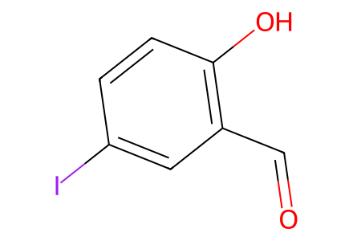
O=Cc1cc(I)ccc1O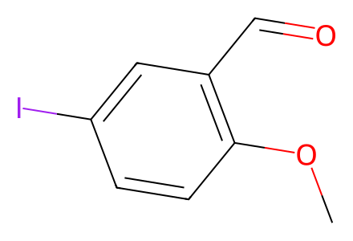
COc1ccc(I)cc1C=O
IC[P+](c1ccccc1)(c1ccccc1)c1ccccc1.[I-]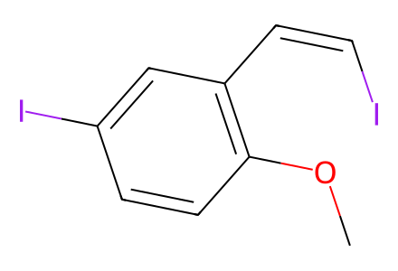
COc1ccc(I)cc1/C=C\I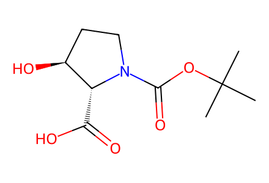
CC(C)(C)OC(=O)N1CC[C@H](O)[C@H]1C(=O)O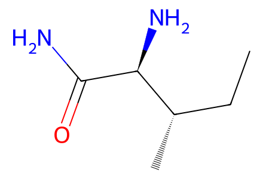
CC[C@H](C)[C@H](N)C(N)=O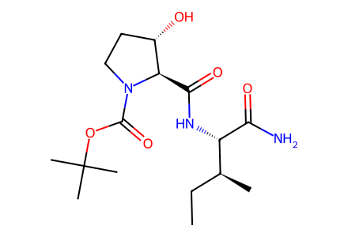
CC[C@H](C)[C@H](NC(=O)[C@@H]1[C@@H](O)CCN1C(=O)OC(C)(C)C)C(N)=O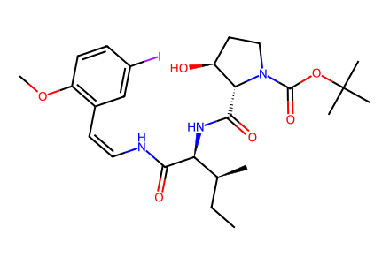
CC[C@H](C)[C@H](NC(=O)[C@@H]1[C@@H](O)CCN1C(=O)OC(C)(C)C)C(=O)N/C=C\c1cc(I)ccc1OC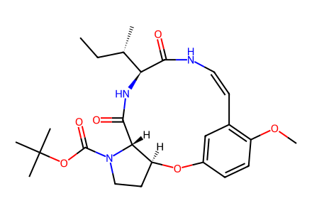
CC[C@H](C)[C@@H]1NC(=O)[C@@H]2[C@H](CCN2C(=O)OC(C)(C)C)Oc2ccc(OC)c(c2)/C=C\NC1=O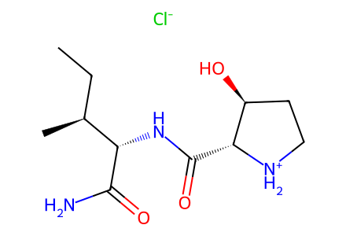
CC[C@H](C)[C@H](NC(=O)[C@H]1[NH2+]CC[C@@H]1O)C(N)=O.[Cl-]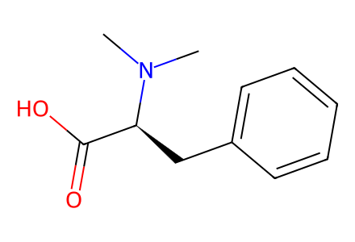
CN(C)[C@@H](Cc1ccccc1)C(=O)O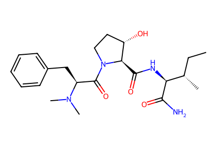
CC[C@H](C)[C@H](NC(=O)[C@@H]1[C@@H](O)CCN1C(=O)[C@H](Cc1ccccc1)N(C)C)C(N)=O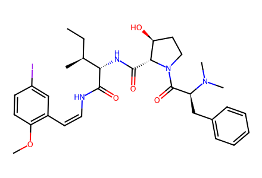
CC[C@H](C)[C@H](NC(=O)[C@@H]1[C@@H](O)CCN1C(=O)[C@H](Cc1ccccc1)N(C)C)C(=O)N/C=C\c1cc(I)ccc1OC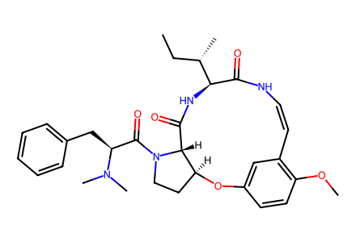
CC[C@H](C)[C@@H]1NC(=O)[C@@H]2[C@H](CCN2C(=O)[C@H](Cc2ccccc2)N(C)C)Oc2ccc(OC)c(c2)/C=C\NC1=O